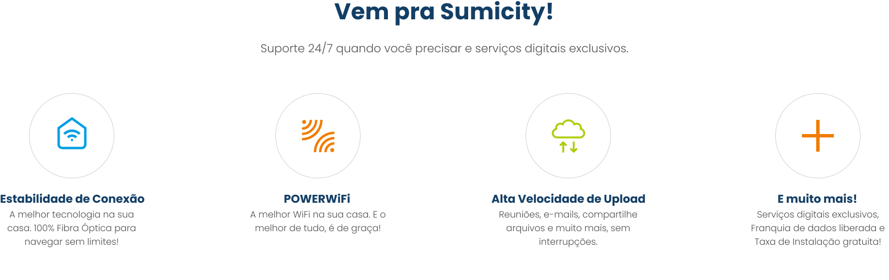
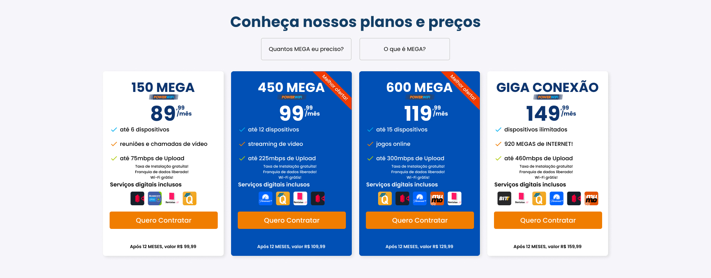
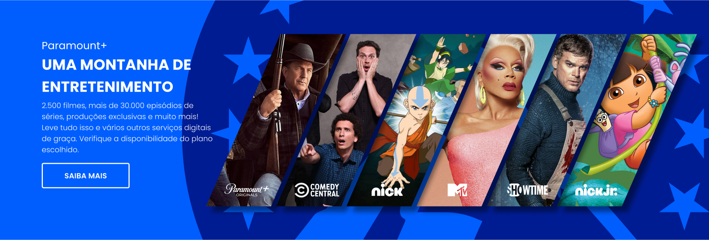
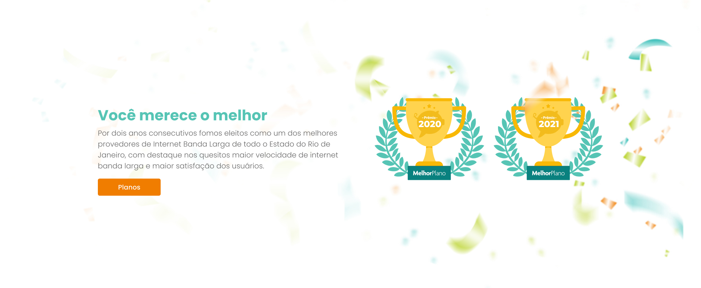
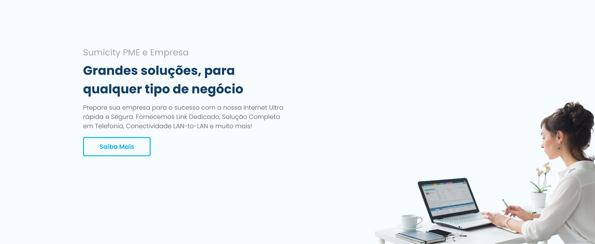
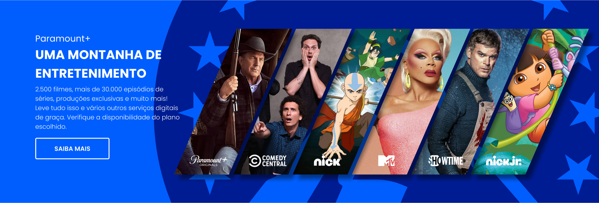
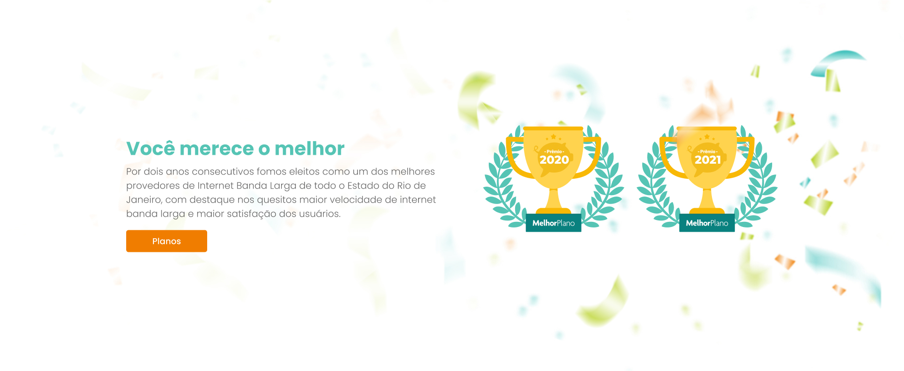
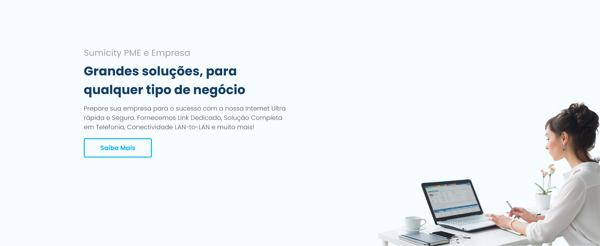

Sumicity
Sumicity é uma operadora de comunicações que atende nos estados de Minas Gerais, Rio de Janeiro, Espirito Santo e DF.
Visão Geral do Projeto
A Empresa
Sumicity é uma operadora de telefonia que oferece serviços de Internet via Fibra Óptica, TV e Telefone.
Objetivo
Modificar o Index (página principal) sem mudar muito o design que já existe. Criando uma experiência mais agradável e fácil ao usuário e também impulsionando vendas.
Ferramentas
Figma
Photoshop
Illustrator
Entendendo o Projeto
Pesquisa
Como eu não era muito familiarizado com as empresas de telefonia do Brasil, eu comecei a pesquisa olhando sites internacionais que ofereciam Internet e depois olhar as empresas nacionais.
Objetivos da pesquisa:
- Entender melhor o mercado de telefonia e internet no Brasil e no mundo.
- Identificar concorrentes e avaliar seus pontos fortes e fracos.
- Descobrir frustrações, objetivos e necessidades dos clientes.
Análise de Mercado
Para aprender mais sobre o mercado de Telefonia, eu comecei com uma pesquisa com a ajuda do Google. Por meio da pesquisa, consegui obter uma compreensão maior e preencher as lacunas do meu conhecimento sobre o setor para informar melhor minhas decisões de design no futuro.
Aqui estão alguns dos principais tópicos que descobri:
- Smartphones, TVs, Notebooks (dispositivos que usam WiFi) são os mais presentes
- Dos brasileiros com acesso à internet, aproximadamente 90% ficam online diariamente
- Quase 75% dos brasileiros jogam video-game e menos de 50% possuem +100MB de internet
- Desde o começo da pandemia, o uso da internet aumentou entre 40% e 50%
Análise de Concorrentes
Após aprender um pouco mais sobre o mercado, eu quis olhar um pouco mais nos concorrentes da Sumicity e como a página principal de cada um ajudava e/ou facilitava o usuário.
Dos “concorrentes” internacionais, avaliei: Verizon(EUA), AT&T (EUA), Xfinity (EUA) e BT (Inglaterra). Já os nacionais foram: Vivo, Claro e HughesNet.
Principais diferenças que notei em sites concorrentes:
- Site em geral mais organizados, sem botões repetitivos
- Empresas internacionais contam com um design mais moderno e também ajudam mais o consumidor na hora de escolher o plano
-
Uma maior divulgação de vários fatores, como:
- Promoções
- Prêmios
- Planos para empresas
- Serviços digitais
Personalidades que acessam o site
Para ter uma ideia básica de quem são os clientes da Sumicity, eu usei tudo que aprendi até agora para criar três tipos de pessoas que acessam o site. Isso me ajudou no design e também a começar a entender suas necessidades.
Gamer
entre 25-34 anos
Necessidades:
- Ter uma internet confiável
- Alta velocidade de Upload e Download
- Facilidade de contrato
Funcionário(a) Remoto
entre 25-39 anos
Necessidades:
- Ter internet MUITO confiável, que não caia
- Alta velocidade de Upload e Download
- Suporte eficiente em caso de problemas
Proprietário(a) de casa
entre 40-55 anos
Necessidades:
- Ter boa WiFi
- Velocidade razoável de Download e não se importa com Upload
- Poder usar vários aparelhos de uma só vez
Definindo e Formulando Ideias
Definindo Problemas
Agora que eu já entendo os usuários da Sumicity, quero começar a pensar nos problemas que eu posso resolver. Então decidi criar uma lista com todos os problemas que podem ser encontrados pelos usuários no site.
São eles:
- Falta de um espaço para busca
- Excesso de botões que oferecem a mesma funcionalidade podem oferecer confusão
- Banner/Slide confuso e pode ser facilmente ignorado por usuários
- Falta de facilidade em contratar os planos, muitas opçoes para entrar em contato com a empresa
- Serviços digitais são pouco divulgados
- Pouca divulgação e incentivo para o usuário ser convencido
- Planos para empresas não são citados fora do Header
- Header muito grande, tomando grande espaço da tela e não era presente em todas as páginas e nem com scroll down
Soluções e Objetivos
Com os problemas definidos, eu tive várias ideias de como eles poderiam ser solucionados. Então decidi fazer uma lista com tudo que iria mudar.
Soluções:
-
Header:
- Diminuir o tamanho
- Reduzir quantidade de botões (vários levam ao mesmo local)
- Adicionar uma caixa de busca
-
Banner:
- Em vez de fazer em Slide, decidi fazer apenas uma imagem e também utilizei a imagem de pessoas reais, para que o usuário se identifique
- Acrescentei um botão que leva aos planos na mesma página para evitar que o usuário seja jogado de página em página
-
Body/Conteúdo:
Aqui foi a parte que mais senti que precisava de mudança.
- Removi a parte de botões abaixo do Banner, que eram apenas botões que ja existiam
- Antes das ofertas adicionei a parte de vantagens, onde o consumidor pode ver o que ele está levando ao assinar com a Sumicity, como:
- Poucas mudanças na parte das ofertas, ofereci ao usuário um botão para que ele possa saber quantos MEGAS de Internet ele precisa e caso ele não saiba o que é MEGA, um botão ao lado abre um pop-up para explicar o que é MEGA (explicando velocidades de internet e etc...)
- Mais abaixo também adicionei um questionário para ajudar o usuário a saber quantos MEGA ele precisa (o botão citado a cima leva o usuário para essa parte) e indica o melhor plano.
- Após essa parte dos planos, decidi adicionar um banner mostrando mais sobre os serviços digitais. Como o serviço “Paramount+” poderia ser um dos mais atraentes ao usuário, decidi fazer um banner resumindo seu catálogo e falando um pouco mais sobre o conteúdo. Também falei sobre a presença de outros serviços digitais.
- Também decidi dar mais visibilidade aos prêmios recebidos pela Sumicity, modificando o design dos prêmios e modificando o botão, para que leve o usuário aos planos e não para outros reconhecimentos/prêmios
- Para finalizar, adicionei uma parte para Empresas. A localização do botão para empresas era somente no Header (e continua), porém o Header some ao arrastar o site para baixo e isso pode causar uma confusão no usuário e levando o mesmo a pensar que planos para empresas não existem.
 

Prototyping
High Fidelity Prototype
Pela decisão de não recriar totalmente o site e também não ser um redesign oficial, não fiz sketches nem testes com o novo design. Decidi apenas criar um prototype da página direto no Figma, já que usei o site antigo como Wireframe.
Reflexões
Considerações Finais
Esse foi meu primeiro projeto UX e isso me permitiu ganhar um grande compreensão de design, pesquisa, um pouco de testes e conhecimento do usuário.
Eu escolhi fazer um redesign pelo desafio que ele pode demonstrar, mas ao mesmo tempo não precisando de muita UI.
No geral, aprendi muito com esse projeto e fiquei feliz com o resultado final.
Próximos Passos
Um design nunca está finalizado, então o que eu faria no futuro:
- Implementaria o design em todo o site, contando com as páginas de cadastro/pagamento
- Testaria a “usabilidade” do site para saber se tudo que planejei deu certo, e como sei que nem sempre esse é o caso, realizaria mais mudanças no design.